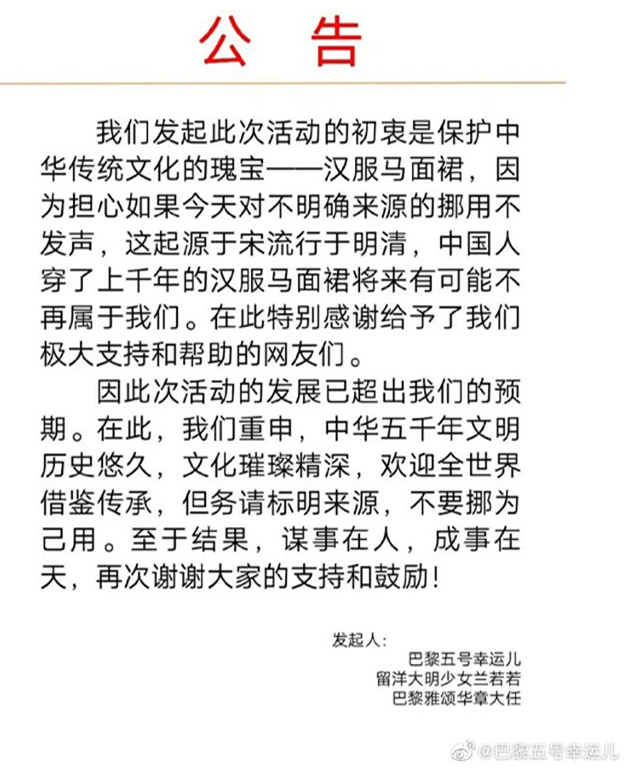

|

（留学生手举“停止文化挪用”标语以及留学生们发起抗议运动的公告 图片源自微博巴黎五号幸运儿）
|
马面裙，又名“马面褶裙”，中国古代女子主要裙式之一。可以追溯至宋朝。明朝时正式出现，至民国时期依旧有人穿着，
进入21世纪亦因为汉服运动的兴起而得到了一定的推广。
两傍有摆，前襟两截，而下有马面褶，往两旁起。因为开叉和马面的
展现民族风 形制，而被称为马面裙
“我仔细对比了那条有争议的裙子和中国传统马面裙，确认其细节重合度至少90%，并且也在国内外网站查找相关新闻，发现
迪奥对这条裙子的灵感有各种解释，却始终没有提到“中国马面裙”任何字眼。当时博衍成员群里不乏热血正义之辈，纷纷在群里讨
论这件事情，我们都想要做些什么”发起者“巴黎五号幸运儿”说到。
当事件曝光时，“迪奥抄袭中国传统服饰马面裙”的消息迅速传播，在7月1日至9月1日两个月内，平均传播速度为355条每小时。
而峰值传播速度已经高达1418条每小时。
而迪奥对此的回应仅是在中国官网下架这件商品
B站up主七十二烟尘发布了迪奥此次的单品与国内汉服厂家你好美荔在2019年秋季上新的皮扣中长马面裙的对比视频。
在对待其他国家文化时，迪奥显示出与对中国截然不同的态度。在自己产品运用其他文化元素时，官方的回答是：“这家概念融合了法国和韩国文化”。而本次事件中，迪奥官方的说法却是：“标志性的Dior廓形”“全新的优雅时尚的单品”，并未提及“借鉴或参考中国传统设计”。

（图一图二来自迪奥官方推特消息，图三为迪奥官网信息）
|
早在1997年，约翰·加利亚诺（John Galliano）成为迪奥首席设计师的第一场春夏高级定制时装秀上，就出现了大量中国元素。当时非但没遭到中国网友的反感，甚至亲切称其为「海上花系列」，因为设计师直言灵感来源是好莱坞第一位华裔明星黄柳霜和昔日上海的「月份牌女郎」。
|
网民观点
数据来源：清博大数据
|
|
主要平台热度
数据来源：清博大数据
|
对于这件事网友的看法非常的相似，皆认为迪奥盗用中国传统文化。而最多的讨论发生在微博平台。
我们也在国内著名平台微博和知乎里挑选了热度排名前几的回答。
“作为中国的设计师，其实很支持其他国家设计师，用中国元素做时装的设计。但是这个涉及到了会让世界，误认为马面裙是dior的经典廓形，而不是中国的传统服饰。这还挺严重的。”（来自微博知名答主张突然啊）
“从商业的角度分析，但凡Dior承认一句，这是中国风。绝对会卖爆，至少在中国要卖的起飞。”（来自知乎知名答主我变成了一只狗）
“其实大家愤怒的点并不在于Dior标志性廓形这句话，而是在于迪奥只说了：裙子是Dior标志性廓形。”（来自知乎知名答主折原临也）
“他如果表明借鉴中国马面裙元素我倒是挺乐意他们认可中国元素的，问题是他标注成迪奥标志性裙型，这我就大为震撼了，合着某宝卖了五六年的汉服裙子一下子成了“盗版”？”（来自知乎答主代扣变同）
“借鉴了但是不承认，不承认还篡改”，这是令绝大多数网友感到愤怒的关键。

中国作为世界上文化延续时间最久的国家，其传统文化在传承与发展过程中，对周边各国各地区文化的影响颇为深厚。
丝绸之路，鉴真东渡，郑和下西洋……在一次次的主动或非主动的文化传播中，中国文化对东亚各国，甚至东南亚以及世界各国产生了深远的影响。这种影响不仅表现在政治，历史等方面，更体现在社会风俗，思想文化等方面。正是这种文化间互相不断的交流影响，最终形成了以中华文化为中心，其余东亚各国受其辐射的东亚文化圈。
近年以来，我们越来越容易发现，我们正在不断“失去”我们的文化。
韩国对中国文化进行申遗的事情近年来屡屡登上热搜。也有许多人对其进行讨论。但就世界非物质文化遗产名录和韩国文化院中记录的与中国有关的文化遗产，我们进行了一次整理。
比如江陵端午祭，2005年被联合国教科文组织正式确定为“人类口头和非物质遗产代表作”。英文为Danoje Festival，与“端午”的汉语发音极其相似。比如燃灯会，韩国申遗的燃灯会上所放的灯是中国四川的自贡彩灯，而韩国的原本的灯只有一个方灯。

如今，每个国家的文化都在面临相同的问题：传承与保护。
中国的传统文化正在逐步走向世界，但在其发展过程中，还面临着不少的问题。比如新老文化的碰撞，保持文化的独特性，正确融入世界文化等等。从中我们可以看出，传统文化的发展态势并不乐观。随着改革开放程度的加深，外国文化的不断传入，并且越来越受到青年人的喜欢，这也导致了我国的文化被慢慢的侵蚀。传统文化具有独特性，也正是因为它的独特性，可以更好的展现民族风采，所以要实现新时代下传统文化的传承与发展已经刻不容缓。
在江苏省有一个名叫舟山村的村庄。在这个宁静古朴的小村庄里，百年来一直传承着一门手艺——核雕。而在这里谢才元和钟秀琴夫妇便是个中翘楚，他们也被称之为雕刻界的“神雕侠侣”。
有人问谢才元，雕刻过程中什么是最难的，他说：“没有什么难的，只要功夫深，铁杵磨成针。”四十年的时间，专心致志的练习技艺，在谢才元的口中化作轻描淡写的一句。而这句话的分量，却是一位匠人的万千心血。
每一次下刀，刻出传统文化的韵味；每一次沉思，构想传统文化的灵魂。核雕的一代“神雕侠侣”都已经年过六旬，但是依然每天拿着刻刀，专注的精雕细琢。在数十年的精雕细琢中，核雕已经成为了他们生命的一部分，从谋生最终变成对雕刻技艺的热爱与传承。
民族传统手工艺品的制作，既是一种独特的技术，也是一种璀璨的艺术。一个民族的传统文化依靠它薪火相传，而民族的历史及民族的责任更是由它当仁不让的去承载。
中华传统文化是我们的祖先智慧的结晶,它是社会发展的见证者。在它身上，我们看到了美学价值，文化价值以及历史价值。若社会是一片土壤 ，那么文明便是种子，赋予这片土地生机，使得文明繁华且多样。
文化遗产是一个文明最好的代表，保护文化遗产也就是保护我们文化的传承。
如果说“非遗”保存了民族特有的文化信息，那么民族就是“非遗”的归属。非遗保护包含在文化保护之中，并且是非常重要的一部分。在当今社会，非遗对于文化的保护具有促进作用。
|
2019年部分国家保存、保护和保全所有文化和自然遗产的人均支出总额
数据来源：联合国教科文组织统计研究局
|
<
国家保存、保护和保全所有文化和自然遗产的人均支出总额在一定程度上可以反映一个国家对于文化保护的重视程度和投入程度。在2019的统计中中国的排名并不算高，甚至可以说所有人口大国的数据几乎都不高，因为人口存在稀释的作用。但与之相对的是，几乎所有人口大国都拥有着与人口数成正比的文化数量，比如中国和日本。
|
近6年世界部分国家文化产品进口
数据来源:联合国教科文组织统计研究局
|
而文化产品的进出口可以看出某国家国民对于文化的重视程度。中国在文化产品出口的榜单里一骑绝尘，是唯一一个达到2万亿的国家。而出口前三名的中国，美国，德国在进口榜单里同样包揽前三。
虽然我国在国际上的各项数据表现不错，但是仍然有需要警惕的方面。据调查，被采访的非遗传承人有50.98％认为缺乏资金支持是当前非遗发展面临的最大问题，另外还有保护意识不够，传承人老龄化与缺乏保护机制等问题亟待解决。
同时世界上，包括中国，面临失传的非遗项目不在少数。比如王之涣诗中的“羌笛何须怨杨柳”的羌笛就面临后继无人。根据调查，被采访的非遗传承人中有66.7％认为失传的原因是年轻人不愿意继承。另外，市场前景不好，市场保护工作不够，民众保护意识不强等也是非遗项目失传的原因。
为什么没人愿意继承非遗？或许下面这张数据会给我们一点线索
非遗产品年均营收分布
数据来源：民生智库
|
|
非遗领域发展现状分布图
数据来源：民生智库
|
2021年居民人均可支配收入平均数与中位数
数据来源：国家统计局
|
数据显示，非遗产品年均营收在1万元以下的占比30.39%，在1-3万元的占比21.57%。即半数多的非遗传承人只靠非遗的收入不超过3万。
而根据国家统计局《2021年居民收入和消费支出情况》，2021年居民可支配收入平均数与中位数分别为29975元和35128元。并且学生，小孩子，没有经济收入的老人都包括在内。
非遗本身就是一门技术和艺术。从个人方面来看，从事非遗工作要付出不小的学习成本，但得到的回报并不足以维持生活。

我们应该积极投入到文化的整理工作中，寻找更好地保护与传承传播的方法。
中国高度重视文化的保护工作。近年来，中共中央办公厅、国务院办公厅出台了《关于实施中华优秀传统文化传承发展工程的意见》等一系列重要文件，明确了非遗保护工作的方向和重点，在非物质文化遗产的保护工作取得了巨大成就。
以北京城改造为例，北京是一座富有历史韵味的城市，而北京自身发展迅速，导致现代与历史之间存在矛盾。古城传统格局和空间肌理不复存在，独具特色的北京胡同以及四合院整体历史风貌也零星散落在被现代高层建筑群挤压的有限空间里。如今《北京城市总体规划(2016-2035年)》明确新老城区分开，在通州设立城市副中心，有序疏解北京非首都功能。
规定一出，老城整体保护得到加强，保持老城的空间形态、传统建筑色彩和形态特征，老胡同、四合院得到了有效的保护。
通过采取有效措施，文化遗产保护得到全面加强。到2010年，初步建立比较完备的文化遗产保护制度，文化遗产保护状况得到明显改善。到2015年，基本形成较为完善的文化遗产保护体系，具有历史、文化和科学价值的文化遗产得到全面有效保护;保护文化遗产深入人心，再到如今，非文化遗产的跨领域融合形式受到了广泛的好评。非遗与其他领域相互融合借力，又进一步提高了非遗的传承和发展。随着保护文化遗产项目的深入人心，民众的保护意识得到了很大的提高，保护文化遗产已经成为了全社会的自觉行动。
加强历文化保护传承不是一句口号，也不是当下的时髦标签，而是一种民族的责任和家国情怀。不去研究理解文化保护传承的核心意涵，缺少“根”的意识和对文化价值特色的深刻认知，很难把握“根”与“魂”。妥善处理好保护与传承的关系，从提炼和弘扬历史文化价值特色中，促进创造性转化和创新性发展。